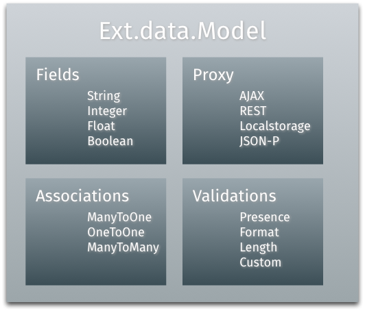

Ext JS 5 手册 核心概念（二）类型系统 Ext JS 5 手册 核心概念（二）类型系统 核心概念 类型系统 命名约定 类 类名只允许包含字母和数字。数字是允许使用的，但只在必要时使用。不使用下划线、连字符和其它非数字字母。 类名应该按包分类。至少应该使用唯一的顶级命名空间。 顶级命名字音和类名应该使用驼峰式命名规则，其它部分都使用小写。 非Sencha提供的类不应该使用Ext作为顶级命名空间。 源文件 类文件名按包路径保存。一个文件中只有一个类。 所有的类都应该放在同一个根目录下。 方法和变量 方法和变量只使用字母和数字。只在必要时使用数字字符。不要使用下划线、连字符和其它非数字字母。 方法和变量名应该使用驼峰式命名。这一规则同样适用于缩略词。 属性 类属性名遵循相同的命名规则 类的静态属性应该全部使用大写 声明 Ext JS 4 之前的方式 Ext.ns('My.cool'); My.cool … Read more...
Ext JS 5 手册 核心概念（三）组件 Ext JS 5 手册 核心概念（三）组件 核心概念 组件 Ext JS 应用中的 UI 是由一个或多个被称为组件(Components)的构件组成的。所有组件都是Ext.Component的子类，它能自动管理组件的生命周期，如：实例化、渲染、改变大小和位置、销毁。 组件的层级 Container是一种特殊的能包含其它组件的组件。一个典型的应用是由一些树状嵌套的组件组成的，由container来负责管理组件和它们的子组件的生命周期，包括它们的：创建、渲染、改变大小和位置、销毁。一个典型应用的组件层级是由顶部的Viewport开始，它包含了其它containers和组件嵌套而成： 子组件通过Container的items配置属性添加到 … Read more...
Ext JS 5 手册 核心概念（四）数据包 Ext JS 5 手册 核心概念（四）数据包 核心概念 数据包 数据包是应用中处理数据加载和保存的。它包含了很多类，其中以下三个是最重要的： - Ext.data.Model - Store - Ext.data.proxy.Proxy 上面的类几乎在所有应用中都被用到。它们由一些卫星类支撑： Model 类所包的中心是Ext.data.Model。Model用于描述应用中一个实体。 Model中的主要部分有： - Fields - Proxies - Validations - Associations  创建 Model 通常可以定义一个公用的基础类。这个基类能定义所有 Model 公用的属性。 Model 有两个重要的属性fields和schema。 Ext.define('MyApp.model.Base' … Read more...
Ext JS 5 手册 核心概念（五）事件 Ext JS 5 手册 核心概念（五）事件 核心概念 使用事件 Ext JS 中的组件和类在其生命周期中会产生大量的事件。事件能让你的代码响应程序的变化。 什么是事件 以 Ext.Component 渲染到屏幕上为例，Ext JS 会在渲染完成后产生事件。我们可以配置一个listeners对象来监听这个事件： Ext.create('Ext.Panel', { html: 'My Panel', renderTo: Ext.getBody(), listeners: { afterrender: function() { Ext.Msg.alert('We have been rendered'); } } }); 监听事件 Ext.create('Ext.Button', { renderTo … Read more...
Ext JS 5 手册 核心概念（一）可访问性 Ext JS 5 手册 核心概念（一）可访问性 核心概念 可访问性 它提供了浅析的标明当前焦点的样式，并允许自字义焦点样式 键盘导航 组件的 DOM 元素使用属性提供了语义信息来辅助屏幕阅读等功能： ARIA 角色 ARIA 状态和属性 提供了 ARIA 包，可以像引用其它包一样的在app.json中引用 提供了 ARIA 皮肤 Read more...
Ext JS 5 手册 应用程序架构（一）应用程序架构简介 Ext JS 5 手册 应用程序架构（一）应用程序架构简介 程序架构 应用程序架构简介 Ext JS 提供了对 MVC 和 MVVM 架构的支持。 MVC 在 MVC 架构中，用户与 View 交互，它显示 Model 中的数据。这些交互由 Controller 来处理，它负责修改 View 和 Model。 View 和 Model 互相是不知道的，因为 Controller 在直接处理更新。即，Controller 包含了 MVC 应用中大多数的程序逻辑。View 有可能也包含了少量业务逻辑。Model 则主要是提供了数据处理和业务逻辑处理的接口。 MVC … Read more...
Ext JS5 手册 应用程序架构（二） View Controller Ext JS5 手册 应用程序架构（二） View Controller 监听 在 Ext JS 5 中对listeners这个配置项进行了增强。 Ext.define('MyApp.view.foo.Foo', { extend: 'Ext.panel.Panel', xtype: 'foo', controller: 'foo', items: [{ xtype: 'textfield', fieldLabel: 'Bar', listeners: { change: 'onBarChange' // no scope given here } }] }); Ext.define('MyApp.view.foo.FooController', { extend: 'Ext.app … Read more...
设计模式回顾 设计模式回顾 创建模式 Simple Factory 工厂类提供静态方法来创建某一接口类型的具体实现，该方法根据传入的参数来决定需要创建哪种类型的实现，因此传入的参数一般带有具体的类型信息（ class 的完整名称，或在某个包下的简称等等）。 举例：音乐盒接口的实现有钢琴音乐盒，小提琴音乐盒，有一音乐盒工厂类，它的 createMusicBox 方法内部根据参数来创建钢琴音乐盒或小提琴音乐盒。 Abstract Factory 抽象工厂模式一般用于创建一套对象，它将具体的某套对象的创建方法封装在对应的工厂类实现里。这些工厂类实现了同一接口（抽象工厂）。工厂类接口中的各个方法都返回接口类型。在具体工厂类的实现中它的各个方法能返回一套实现中不同类型的对象。 举例：多套 UI 组件具有不同的外观，每一套都由实现同一抽象工厂接口的具体工厂类型来创建。抽象工厂接口里规定了能创建哪些 UI 组件，各个组件的接口类型是什么。具体工厂实现里的各个方法会根据它的风格创建出对应的UI组件。 Builder 当创建复杂的对象或结构时，需要一个负责指挥的的导演类对象，它根据传递给它的 IBuilder ，按某一步骤来进行对象的构建。IBuider中 的各个方法代表构建过程的不同步骤。IBuilder 可以有多个不同的实现。 Factory Method Factory Method 会在抽象类中留下某个创建 … Read more...
Beginning Android Games学习笔记 Game Development 101 在开始hacking前先进行游戏设计。这并非指基本的设计，比如FPS中的WSAD的鼠标之类的。而是类似：是否需要splash screen？需要哪些菜单项？游戏设置里需要有哪些选项？等等。 没有银弹。 游戏流派 开始之前先决定流派。除非你创造了新的流派。同一流派的游戏往往有类似的游戏机制（如控制方式、游戏目标之类）。 Causal Game 猜迷 动作 塔防 其它创新的游戏 游戏设计：笔比代码更强大 在编码前集中设计游戏的用户体验： 核心机制 主要角色的粗略故事 基于角色及其背景设计粗略的画面风格 主要画面的概要及过渡画面 以一个贪食蛇游戏为例。可以用纸和笔记录下这些设计，以坐标纸画出界面草图。 核心机制： 蛇头控制前进方向并拖动它的尾部。头和尾由相等尺寸的部分组成只是显示不同 当蛇走到屏幕边界时，从屏幕的另一边重新进来 左右按钮按下时，蛇将顺时针或逆时针转动90度 如果蛇撞到自己，游戏结束 如果蛇撞到了新块，则块消失，增加10分，添加一个新块到蛇尾。 复杂的游戏需要将这些内容分开来设计，最后再将这些合并起来 … Read more...
Practical Clojure 记笔 状态管理 Clojure主张消除状态管理。而现实世界仍要需要状态变化。 多数语言将事物（things）描述为变量或对象，并允许修改它们。这造成了对锁的需求。 状态和identity Clojure引入新的思考事物的哲学。它将事物分解为2个独立的概念——状态和identity。状态是与identity关联的某一时间点的值，而identity是事物不会改变的那个部分，它会与不同时间的不同状态建立连接。每个状态下的值都是不可变的。改变通过将identity指向（refer）不同的状态入口而模拟产生的。 Clojure中的状态可以是任何Clojure中的数据类型。Identity是由三种引用类型（reference type）所表示的：ref、agent、atom和var。每种都描述了一个identity并指向一个状态。分别用于不同的情况： ref管理同步的coordinated（协调）状态 agent管理异步的independent（独立，不受约束）状态 atom管理同步的independent状态 Coordinated与Independent状态 许多系统都需要对identity的修改是以协调的方式进行以确保数据的完整性。Coordinated的修改方式下将管理多个独立的identities以确保所有修改都会同时进行。例如，在2个银行帐户间转帐操作时，钱存入一个帐号，必须也保证从另一个帐号减去相应的量，这两个动作必须同时发生。Clojure使用ref来提供这种coodinated状态。 与coordinated状态管理对应的是independent状态。Independent identity只处理自身，而不与其它identities相关联 … Read more...
 子组件通过
子组件通过